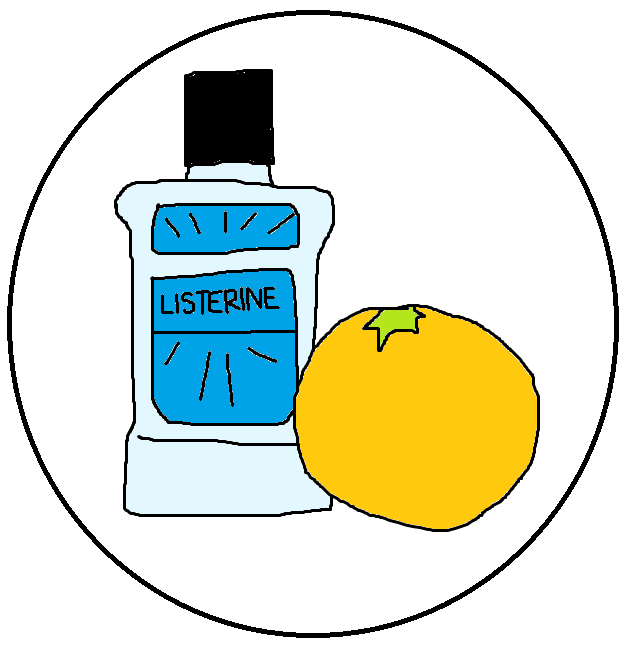

Interacting with the DOM
- 
What is the DOM and why is it useful to know about when it comes to building webpages?
The Document Object Model (the DOM) is the system of files and directories that make up a website’s content. Understanding the DOM and its importance is important for efficient web development. Because using the DOM is a part of how we interact with webpages, such as how we can add or remove content on an HTML document, it is important to know the difference between HTML and CSS, as well as where JavaScript fits into the website and how it can be utilized for user-interactivity, in order to effectively make use of the whole model.
What is HTML?
HTML stands for Hyper Text Markup Language. It is the main language used for making documents that will be shared on the internet. An HTML document holds most of the content that will be displayed on the webpage and is essential to know when making a website and using the DOM. However, the HTML document on its own can look very boring and there is not much you can do to make it appealing to the eye – that is where CSS comes in.
What is CSS?
Cascading Style Sheets (CSS) is a way of styling an HTML document, or another kind of markup language. CSS can be used for a multitude of options in terms of how the content given in the HTML is styled. For instance, it can dictate where certain elements, such as paragraph tags or images, are situated on a page, how large or small they are, as well as their colour and decoration. It is a necessity when making a user-friendly and visually appealing website.
How does JavaScript relate to this?
It is also important to know about different aspects of JavaScript when considering the DOM. One such area is the control flow. Control flow refers to the order in which the elements on a JavaScript document are executed and its importance in creating a working product. A metaphor that relates to this is in choosing to drink orange juice before using Listerine in the morning. Another area that relates to this is the JavaScript loop. Loops are used to run the same code multiple times. The are a useful and dynamic substitute to manually copy-pasting a portion of the code. A real life example of this is buying a clock to read the time instead of writing the new time on a piece of paper every minute.
Another part of JavaScript that can be helpful in coming to understand the DOM is knowing the difference between accessing data from arrays and accessing it from objects. This can be understood by remembering how the two are unique to each other. Both objects and arrays can be used to store more than one piece of data. Arrays, however, are a variable that is useful when you are wanting to be able to access a list from its numerical position in the list. Objects instead consist of a keys and values that make up objects in the code that you can define by their sets of characteristics.
Functions in JavaScript are also useful to know. All of the aspects mentioned above can be used with a function. Functions allow for a section of code to be set and defined and then easily used wherever in the document it is needed.
Where we can interact with the DOM
All of the above information is very helpful in understanding the DOM. Interacting with the DOM allows you to alter different parts of the web documents for a webpage as being able to interact across all the pages related to the directory, such as linking the HTML document to the CSS and the JavaScript documents. This is often done through the use of IDs and classes.